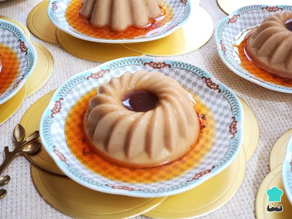

La pizza porteña es una especialidad argentina que refleja la rica tradición culinaria de Buenos Aires. Caracterizada por su masa esponjosa y generosa cobertura de queso, esta pizza se distingue por su sabor intenso y textura reconfortante.
Ver receta completa
El flan de café sin horno es un postre suave y aromático que combina la cremosidad del flan tradicional con el sabor intenso del café, sin necesidad de utilizar horno. Esta receta es ideal para quienes buscan una alternativa rápida y sencilla, utilizando ingredientes comunes que probablemente ya tengas en casa.
Ver receta completa